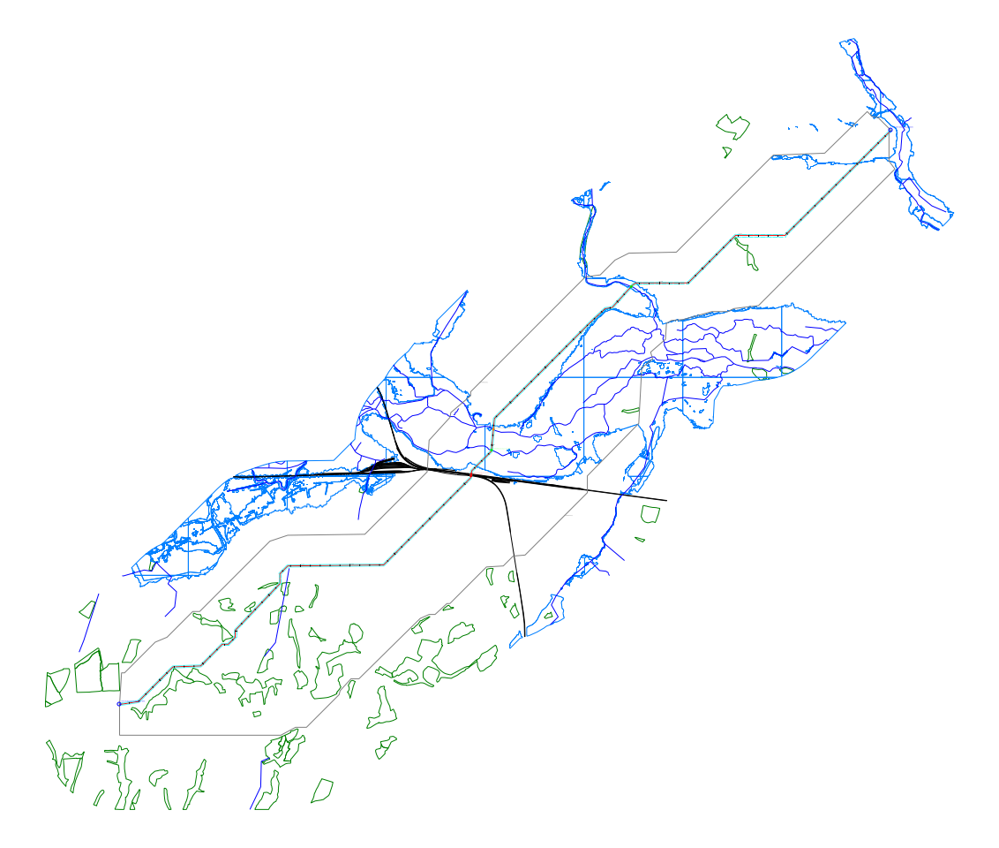
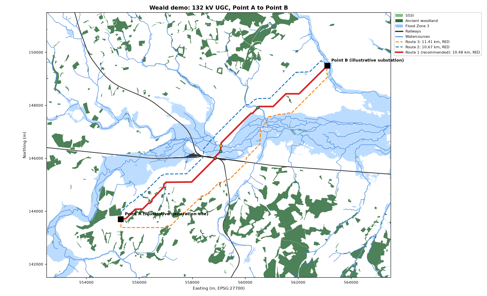

Ranked corridors
| # | Length | Crossings | RED | AMBER | RAG |
|---|---|---|---|---|---|
| 1 (rec.) | 10.48 km | 5 | 3 | 7 | RED |
| 2 | 10.67 km | 6 | 4 | 13 | RED |
| 3 | 11.41 km | 5 | 4 | 16 | RED |
Outputs
routes.dxf: AutoCAD drawing (BNG, layered) rag-report.xlsx: RAG risk & crossings report rag-report.pdf: report for issue summary.jsonData layers
| Layer | Status | Features |
|---|---|---|
| sssi | ok | 4 |
| ancient_woodland | ok | 378 |
| flood_zone_3 | ok | 4176 |
| buildings | unavailable | 0 |
| roads | unavailable | 0 |
| railways | ok | 174 |
| waterways | ok | 310 |
| power_lines | unavailable | 0 |
Crossings on the recommended route
| Ref | Chainage | Type | Class | Name / ref | Angle | RAG | Reason |
|---|---|---|---|---|---|---|---|
| X01 | 4+607 | Railway | rail | 89° | RED | Railway: rail; parallel features over 8 m (e.g. dual carriageway) | |
| X02 | 4+625 | Railway | rail | South Eastern Main Line | 89° | RED | Railway: rail |
| X03 | 4+950 | Watercourse | stream | Gas Works Stream | 80° | GREEN | Watercourse: stream |
| X04 | 5+160 | Watercourse | river | River Medway | 63° | AMBER | Watercourse: river |
| X05 | 7+207 | Watercourse | stream | Pen Stream | 68° | GREEN | Watercourse: stream |
What the CAD team receives


Illustrative study: Points A and B are hypothetical. Desk-based screening only. Buried services are not in open data, so a utility search is still required. Contains Natural England data © Natural England copyright and database right © Environment Agency copyright and/or database right. All rights reserved. © OpenStreetMap contributors, ODbL © OpenStreetMap contributors, ODbL (production: OS / EA main rivers) © OpenStreetMap contributors, ODbL (production: OS MasterMap Highways) © OpenStreetMap contributors, ODbL (production: OS MasterMap Topography)